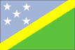

{kind=link}


![[Country map of Solomon Islands]](../maps/bp-map.jpg)
| Solomon Islands |  |
|
| | |
| Introduction |
Background: The UK established a protectorate over the Solomon Islands in the 1890s. Some of the bitterest fighting of World War II occurred on these islands. Self-government was achieved in 1976 and independence two years later. Current issues include government deficits, deforestation, and malaria control.
| Geography |
Location: Oceania, group of islands in the South Pacific Ocean, east of Papua New Guinea
Geographic coordinates: 8 00 S, 159 00 E
Map references: Oceania
Area:
total:
28,450 sq km
land:
27,540 sq km
water:
910 sq km
Area - comparative: slightly smaller than Maryland
Land boundaries: 0 km
Coastline: 5,313 km
Maritime claims:
measured from claimed archipelagic baselines
continental shelf:
200 nm
exclusive economic zone:
200 nm
territorial sea:
12 nm
Climate: tropical monsoon; few extremes of temperature and weather
Terrain: mostly rugged mountains with some low coral atolls
Elevation extremes:
lowest point:
Pacific Ocean 0 m
highest point:
Mount Makarakomburu 2,447 m
Natural resources: fish, forests, gold, bauxite, phosphates, lead, zinc, nickel
Land use:
arable land:
1%
permanent crops:
1%
permanent pastures:
1%
forests and woodland:
88%
other:
9% (1993 est.)
Irrigated land: NA sq km
Natural hazards: typhoons, but they are rarely destructive; geologically active region with frequent earth tremors; volcanic activity
Environment - current issues: deforestation; soil erosion; much of the surrounding coral reefs are dead or dying
Environment - international agreements:
party to:
Biodiversity, Climate Change, Desertification, Environmental Modification, Law of the Sea, Marine Dumping, Marine Life Conservation, Ozone Layer Protection, Whaling
signed, but not ratified:
Climate Change-Kyoto Protocol
| People |
Population: 466,194 (July 2000 est.)
Age structure:
0-14 years:
44% (male 105,024; female 101,065)
15-64 years:
53% (male 124,627; female 121,358)
65 years and over:
3% (male 6,935; female 7,185) (2000 est.)
Population growth rate: 3.04% (2000 est.)
Birth rate: 34.79 births/1,000 population (2000 est.)
Death rate: 4.35 deaths/1,000 population (2000 est.)
Net migration rate: 0 migrant(s)/1,000 population (2000 est.)
Sex ratio:
at birth:
1.05 male(s)/female
under 15 years:
1.04 male(s)/female
15-64 years:
1.03 male(s)/female
65 years and over:
0.97 male(s)/female
total population:
1.03 male(s)/female (2000 est.)
Infant mortality rate: 25.26 deaths/1,000 live births (2000 est.)
Life expectancy at birth:
total population:
71.28 years
male:
68.86 years
female:
73.81 years (2000 est.)
Total fertility rate: 4.8 children born/woman (2000 est.)
Nationality:
noun:
Solomon Islander(s)
adjective:
Solomon Islander
Ethnic groups: Melanesian 93%, Polynesian 4%, Micronesian 1.5%, European 0.8%, Chinese 0.3%, other 0.4%
Religions: Anglican 34%, Roman Catholic 19%, Baptist 17%, United (Methodist/Presbyterian) 11%, Seventh-Day Adventist 10%, other Protestant 5%, indigenous beliefs 4%
Languages:
Melanesian pidgin in much of the country is lingua franca, English spoken by 1%-2% of population
note:
120 indigenous languages
Literacy:
definition:
NA
total population:
NA%
male:
NA%
female:
NA%
| Government |
Country name:
conventional long form:
none
conventional short form:
Solomon Islands
former:
British Solomon Islands
Data code: BP
Government type: parliamentary democracy
Capital: Honiara
Administrative divisions:
7 provinces and 1 town*; Central, Guadalcanal, Honiara*, Isabel, Makira, Malaita, Temotu, Western
note:
there may be two new provinces of Choiseul (Lauru) and Rennell/Bellona and the administrative unit of Honiara may have been abolished
Independence: 7 July 1978 (from UK)
National holiday: Independence Day, 7 July (1978)
Constitution: 7 July 1978
Legal system: English common law
Suffrage: 21 years of age; universal
Executive branch:
chief of state:
Queen ELIZABETH II (since 6 February 1952), represented by Governor General Father John LAPLI (since NA 1999)
head of government:
Prime Minister Bartholomew ULUFA'ALU (since 27 August 1997); Deputy Prime Minister Sir Baddeley DEVESI (since 27 August 1997)
cabinet:
Cabinet appointed by the governor general on the advice of the prime minister from among the members of Parliament
elections:
none; the monarch is hereditary; governor general appointed by the monarch on the advice of Parliament for up to five years; following legislative elections, the leader of the majority party or the leader of a majority coalition is usually elected prime minister by Parliament; deputy prime minister appointed by the governor general on the advice of the prime minister from among the members of Parliament
Legislative branch:
unicameral National Parliament (50 seats; members elected from single member constituencies by popular vote to serve four-year terms)
elections:
last held 6 August 1997 (next to be held by August 2001)
election results:
percent of vote by party - NA; seats by party - GNUR 21, PAP 7, NAPSI 5, SILP 4, UP 4, independents 6, other 3
Judicial branch: Court of Appeal
Political parties and leaders: characterized by fluid coalitions; Christian Fellowship [leader NA]; Group for National Unity and Reconciliation or GNUR [leader NA]; Labor Party or LP [Joses TUHANUKU]; Liberal Party [Bartholomew ULUFA'ALU]; National Action Party of Solomon Islands or NAPSI [leader NA]; National Party [leader NA]; Nationalist Front for Progress or NFP [Andrew NORI]; People's Alliance Party or PAP [leader NA]; Solomon Islands Labor Party or SILP [leader NA]; Solomon Islands National Unity, Reconciliation, and Progressive Party or SINURP [Job Duddley TAUSINGA] (leader of opposition); United Party or UP [leader NA]
International organization participation: ACP, AsDB, C, ESCAP, FAO, G-77, IBRD, ICAO, ICRM, IDA, IFAD, IFC, IFRCS, ILO, IMF, IMO, Intelsat (nonsignatory user), IOC, ITU, Sparteca, SPC, SPF, UN, UNCTAD, UNESCO, UPU, WFTU, WHO, WMO, WTrO
Diplomatic representation in the US:
chief of mission:
Ambassador Stephen Rex HOROI (represents the country as both the permanent representative to the UN and the ambassador to the US)
chancery:
800 Second Avenue, Suite 400L, New York, NY 10017
telephone:
[1] (212) 599-6192, 6193
FAX:
[1] (212) 661-8925
Diplomatic representation from the US: the US does not have an embassy in Solomon Islands (embassy closed July 1993); the ambassador to Papua New Guinea is accredited to the Solomon Islands
Flag description: divided diagonally by a thin yellow stripe from the lower hoist-side corner; the upper triangle (hoist side) is blue with five white five-pointed stars arranged in an X pattern; the lower triangle is green
| Economy |
Economy - overview: The bulk of the population depend on agriculture, fishing, and forestry for at least part of their livelihood. Most manufactured goods and petroleum products must be imported. The islands are rich in undeveloped mineral resources such as lead, zinc, nickel, and gold. Economic troubles in Southeast Asia led to a steep downturn in the timber industry, and economic output declined by about 10% in 1998. The government instituted public service pay cuts and other retrenchments. The economy partially recovered in 1999 on the strength of rising international gold prices and the first full year of the Gold Ridge mining operation. However, the closure of the country's major palm oil plantation in mid-year cast a shadow over future prospects.
GDP: purchasing power parity - $1.21 billion (1999 est.)
GDP - real growth rate: 3.5% (1999 est.)
GDP - per capita: purchasing power parity - $2,650 (1999 est.)
GDP - composition by sector:
agriculture:
50%
industry:
3.5%
services:
46.5% (1995)
Population below poverty line: NA%
Household income or consumption by percentage share:
lowest 10%:
NA%
highest 10%:
NA%
Inflation rate (consumer prices): 10% (1999 est.)
Labor force: 26,842
Labor force - by occupation: agriculture NA%, industry NA%, services NA%
Unemployment rate: NA%
Budget:
revenues:
$147 million
expenditures:
$168 million, including capital expenditures of $NA (1997 est.)
Industries: fish (tuna), mining, timber
Industrial production growth rate: NA%
Electricity - production: 30 million kWh (1998)
Electricity - production by source:
fossil fuel:
100%
hydro:
0%
nuclear:
0%
other:
0% (1998)
Electricity - consumption: 28 million kWh (1998)
Electricity - exports: 0 kWh (1998)
Electricity - imports: 0 kWh (1998)
Agriculture - products: cocoa, beans, coconuts, palm kernels, rice, potatoes, vegetables, fruit; cattle, pigs; timber; fish
Exports: $142 million (f.o.b., 1998 est.)
Exports - commodities: timber, fish, palm oil, cocoa, copra
Exports - partners: Japan 50%, Spain 16%, UK, Thailand 5% (1996)
Imports: $160 million (c.i.f., 1998 est.)
Imports - commodities: plant and equipment, manufactured goods, food and live animals, fuel
Imports - partners: Australia 42%, Japan 10%, Singapore 9%, NZ 8%, US 5% (1996)
Debt - external: $135 million (1997)
Economic aid - recipient: $46.4 million (1995)
Currency: 1 Solomon Islands dollar (SI$) = 100 cents
Exchange rates: Solomon Islands dollars (SI$) per US$1 - 5.0745 (January 2000), 4.8381 (1999), 4.8156 (1998), 3.5664 (1997), 3.4059 (1995)
Fiscal year: calendar year
| Communications |
Telephones - main lines in use: 7,000 (1995)
Telephones - mobile cellular: 230 (1995)
Telephone system:
domestic:
NA
international:
satellite earth station - 1 Intelsat (Pacific Ocean)
Radio broadcast stations: AM 3, FM 0, shortwave 0 (1998)
Radios: 57,000 (1997)
Television broadcast stations: 0 (1997)
Televisions: 3,000 (1997)
Internet Service Providers (ISPs): NA
| Transportation |
Railways: 0 km
Highways:
total:
1,360 km
paved:
34 km
unpaved:
1,326 km (includes about 800 km of private plantation roads) (1996 est.)
Ports and harbors: Aola Bay, Honiara, Lofung, Noro, Viru Harbor, Yandina
Merchant marine: none (1999 est.)
Airports: 33 (1999 est.)
Airports - with paved runways:
total:
2
1,524 to 2,437 m:
1
914 to 1,523 m:
1 (1999 est.)
Airports - with unpaved runways:
total:
31
1,524 to 2,437 m:
2
914 to 1,523 m:
8
under 914 m:
21 (1999 est.)
| Military |
Military branches: no regular military forces; Solomon Islands National Reconnaissance and Surveillance Force; Royal Solomon Islands Police (RSIP)
Military expenditures - dollar figure: $NA
Military expenditures - percent of GDP: NA%
| Transnational Issues |
Disputes - international: none